This guide is for staff using the workspace day to day: shop staff, managers, and accountants. It explains what each screen does, the order in which things should be done, and the rules the system enforces so you are never surprised by a blocked action.
Shopping on the customer-facing storefront is covered separately in docs/mall-storefront-help.md.
Operator-facing references (deployment, activation, monitoring) live in:
docs/mall-operations.md — Mall activation, monitoring, notifications, lifecycle.docs/04-relational-backend.md — data model and backend behaviour.docs/mall-launch-safety.md — go-live gates and safety checks.All screenshots below are captured from a populated local workspace, so figures and order numbers are sample data.
The workspace is separate from the public storefront. Staff pages live under /labs (the older /app path still redirects). If you have no valid staff session you are sent back to the storefront instead of being shown the form.
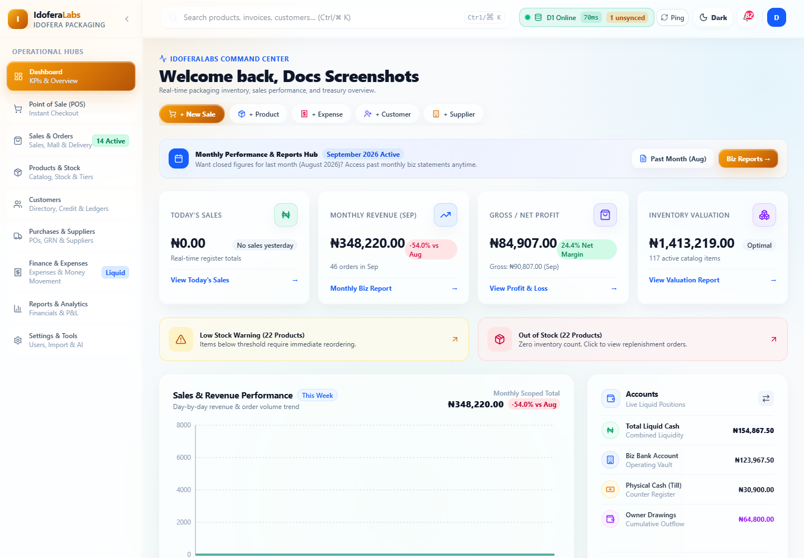
Signing in
Notes
There are four standard roles. A user's role gates both the pages they can open and the buttons they can press.
| Role | Typical use | Page access highlights |
|---|---|---|
| Administrator | Owner / full control | Everything, including Settings, Import, user management, and every management action |
| Store Manager | Day-to-day operations and approvals | All operational hubs; approves delivery quotes, cancellations, listing changes |
| Sales Staff | Counter and order handling | Dashboard, POS, Sales & Orders, Products & Stock, Customers, Settings |
| Accountant | Money, reconciliation, reporting | Dashboard, Sales & Orders, Customers, Purchases & Suppliers, Finance & Expenses, Reports |
Important nuances:
If a button you expect is missing, it is almost always a role restriction — not a bug.
The sidebar is organised into eight Operational Hubs plus a Settings hub. Several hubs contain tabs.
Your landing page and the business at a glance.
Counter terminal for fast in-person sales. Roles: Administrator, Store Manager, Sales Staff.
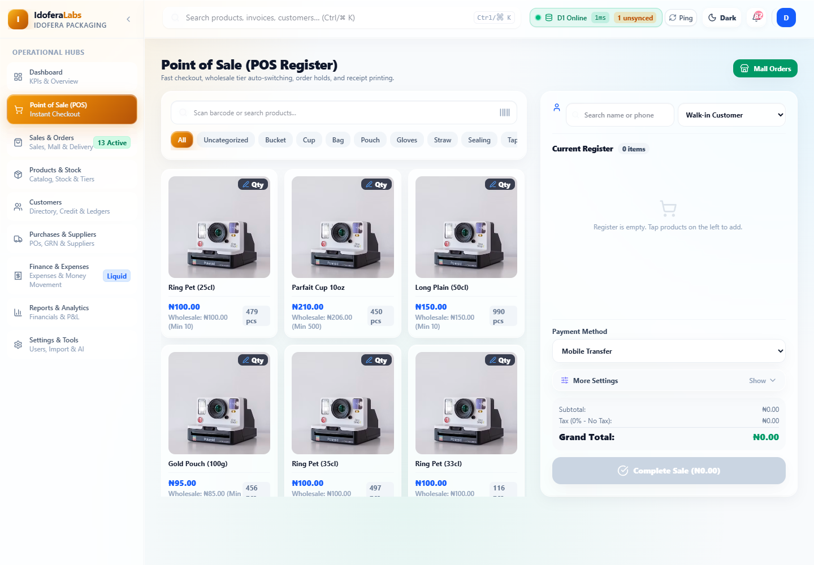
Making a sale
Card, Cash, Mobile Transfer, or Split Payment. - For Split Payment, enter the amount taken by each tender. The system shows whether the split covers the order before you can complete it. - For single-tender sales you may enter an amount tendered / paid to work out change.Wholesale tiers happen automatically. When a line reaches the product's minimum wholesale quantity, that line is charged the wholesale price — but only when it is a genuine discount that stays above the product's floor price. It can never raise a price or beat a better active promotion. The product cards show the tier, e.g. "Wholesale: ₦100.00 (Min 10)".
Credit sales and holds
Receipts — after checkout the receipt can be viewed and printed. It records the sale lines, totals, tender and any split breakdown.
A three-tab hub: Sales Records, Mall Orders, and Deliveries & Pickups. The Deliveries tab shows a pending count when pickups await confirmation, and the sidebar shows an Active badge when there is actionable work across sales and Mall orders.
The history of completed sales, with a daily calendar view and an All Sales Records table.
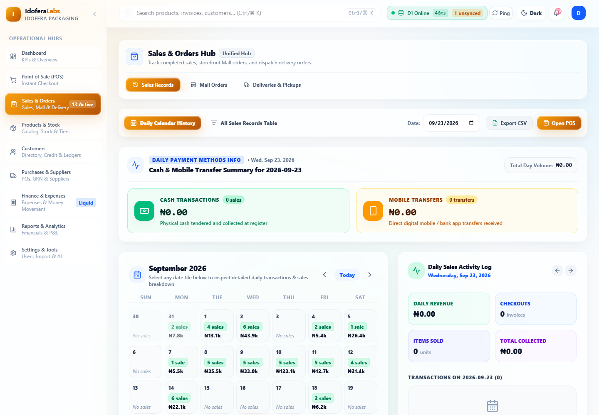
Search and filter to find a past transaction, then open it to review its lines, tender, customer and receipt. The header also summarises totals by payment method (Cash, Card, Mobile Transfer).
This is where you work online storefront orders. It is the most workflow-driven screen, so the details matter.
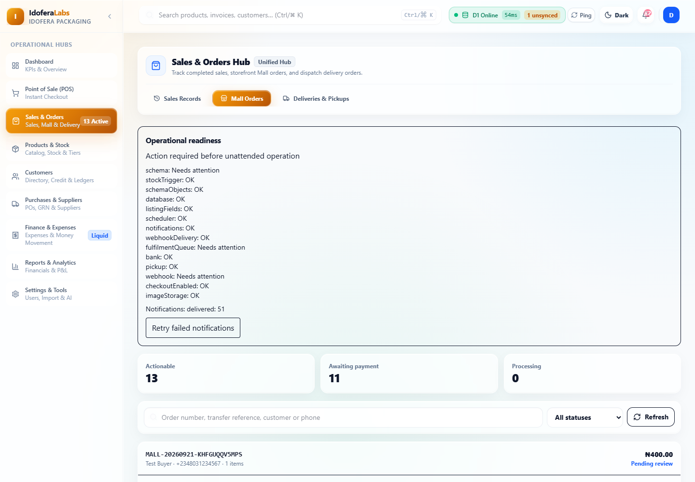
The list shows every Mall order with order number, customer, item count, total and status. Use the search box (order number, transfer reference, customer name or phone) and the status filter, then Refresh — the list also auto-refreshes periodically.
Three counters sit above the list: Actionable, Awaiting payment, and Processing.
Managers additionally see an Operational readiness panel: whether checks are passing, notification counts, and a Retry failed notifications button. Treat "unavailable" as unknown, not as healthy.
Opening an order shows the full detail: items, delivery zone/address, totals, the Order timeline (who did what, when), payment state and every action available to you.
The order lifecycle the system enforces:
`` pending → confirmed → processing → packed → ready_for_pickup → completed packed → out_for_delivery → completed ``
pending order to confirmed.packed, delivery orders only) requires an Assigned courier; then Mark Delivered completes it.Payment
Delivery orders have extra gates. Before an order can be confirmed or paid, staff must verify the address is serviceable: press I verified this address is serviceable within the selected zone. Other-location orders also need a delivery quote — enter the Delivery fee (₦) and Save Delivery Quote before confirming or taking payment. A delivery order can never enter the pickup branch, and a pickup order can never be dispatched.
Refunds (Administrator / Accountant) require a reason and an explicit stock disposition:
If goods had already been dispatched or collected, restocking also needs a goods-received reference. Partial refunds and partial returns are not supported.
Practical rules to avoid mistakes
Dispatch and pickup operations, filterable by status (All, Pending Pickup, Picked Up, Out for Delivery, Delivered, Cancelled).
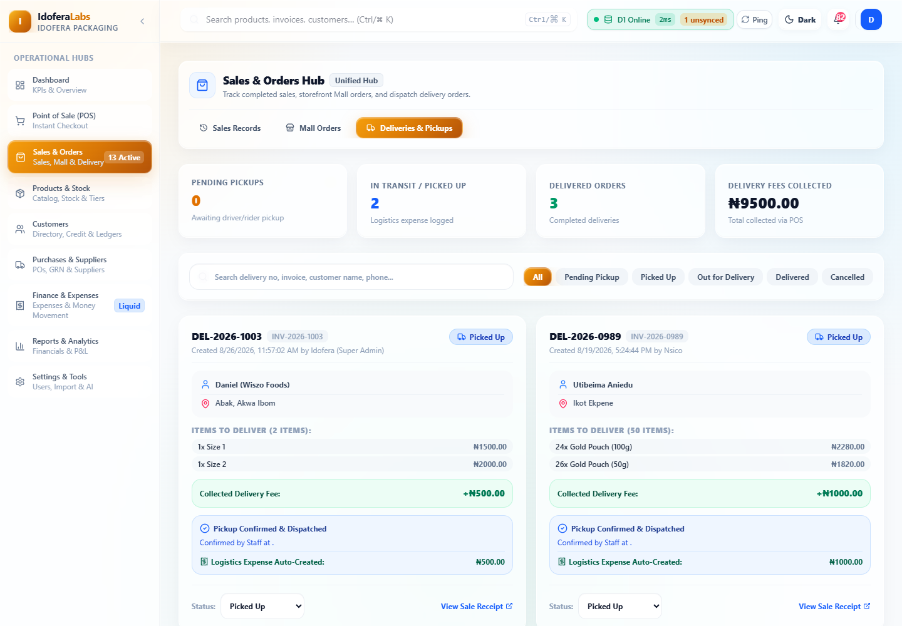
A delivery tied to a Mall order stays in step with that order — conflicting changes made from this generic view are rejected. Always make the change in the place that owns the workflow (Mall Orders for Mall orders).
One hub with five tabs: Product Catalog, Stock Control & Movements, Multiple Pricing Tiers, Mall Listings, and Archived Products.
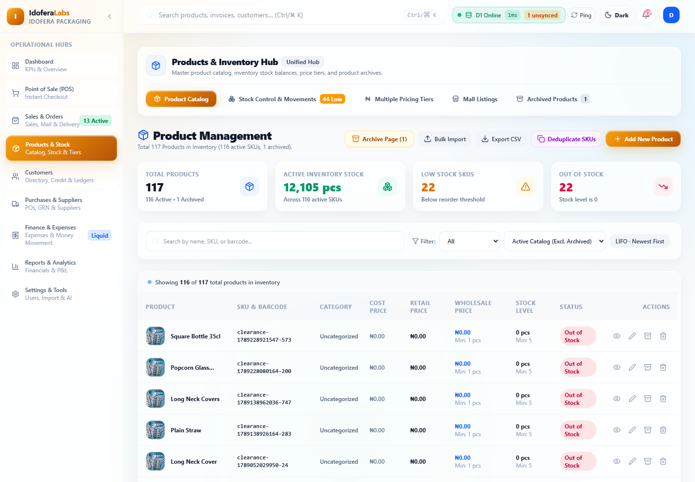
How pricing drives the storefront (so shop and online prices agree):
The customer directory, credit and ledgers.
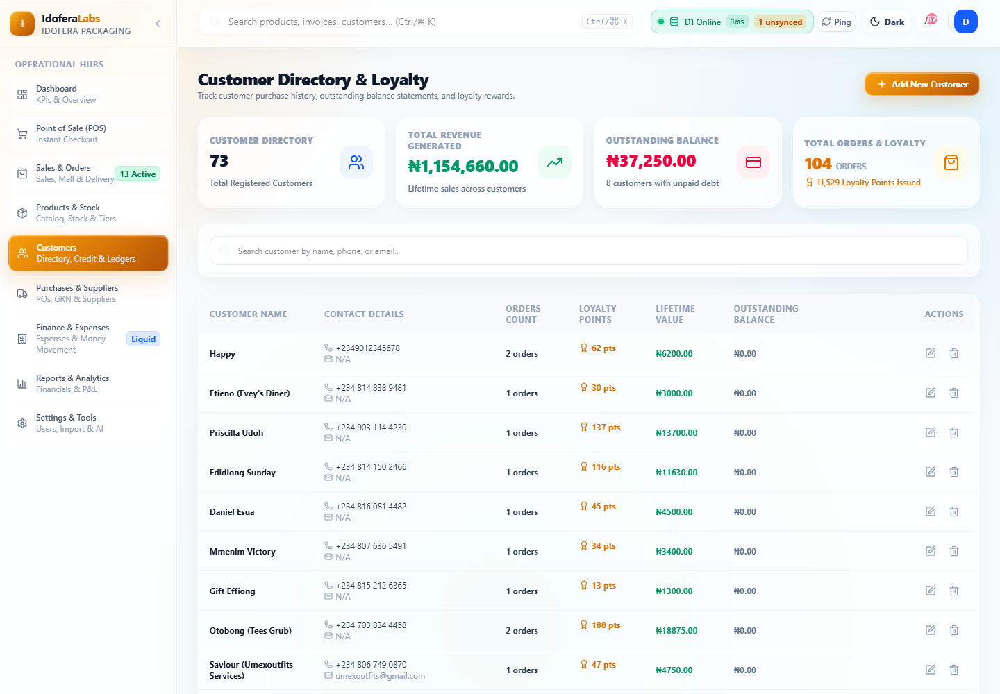
Two tabs: Purchases and Suppliers. Roles: Administrator, Store Manager, Accountant.
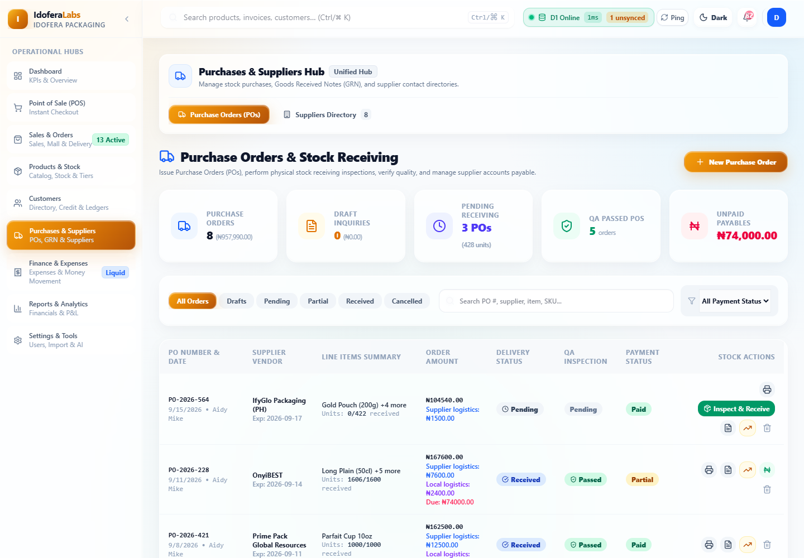
Tabs for Expenses & Money Movement, Money Movement, and Investment Planner. Roles: Administrator, Store Manager, Accountant.
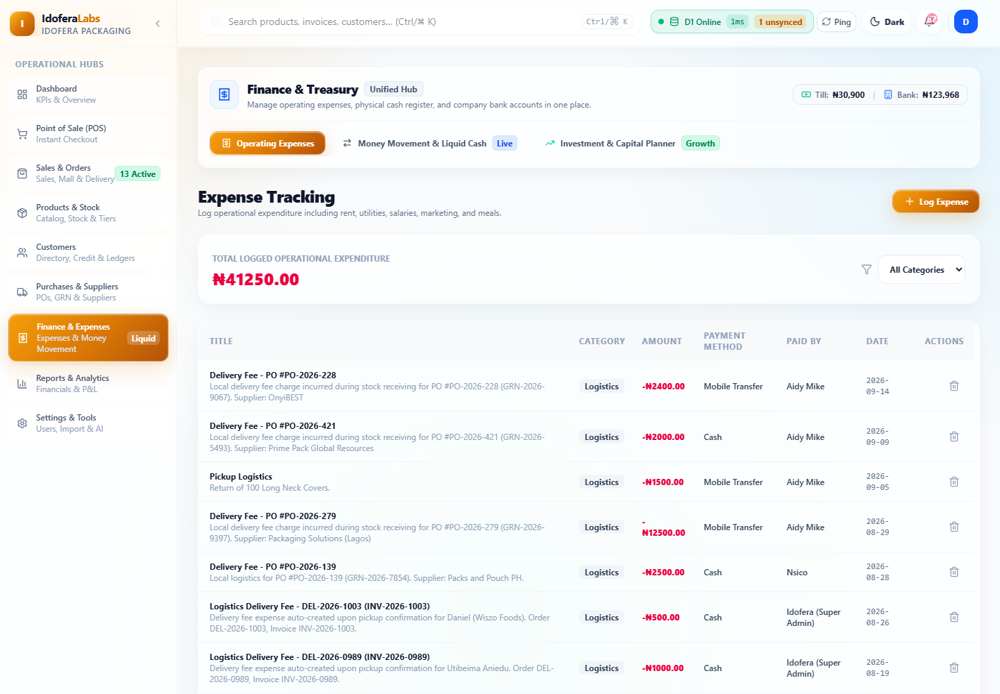
Financial reporting and P&L. Roles: Administrator, Store Manager, Accountant. Use this to review performance over a period.
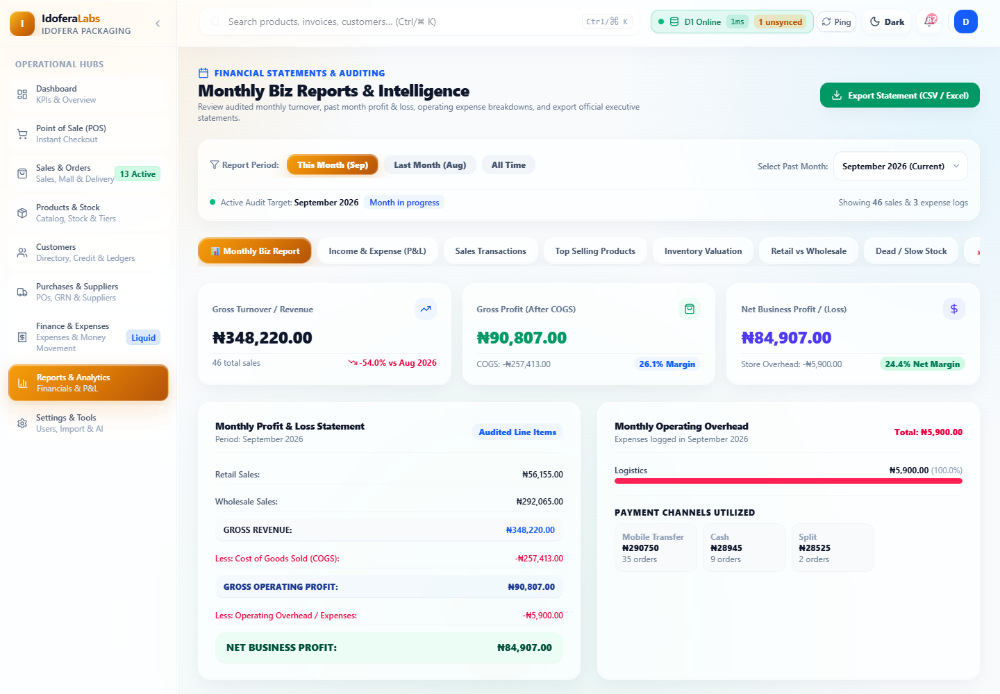
Sub-tabs include Monthly Biz Report, Income & Expense (P&L), Sales Transactions, Top Selling Products, Inventory Valuation, Retail vs Wholesale, and Dead / Slow Stock, with period controls such as This Month, Last Month and All Time. Day-based reports use the local calendar day, so totals line up with the working day.
Three tabs: Settings, Import, and AI Assistant.
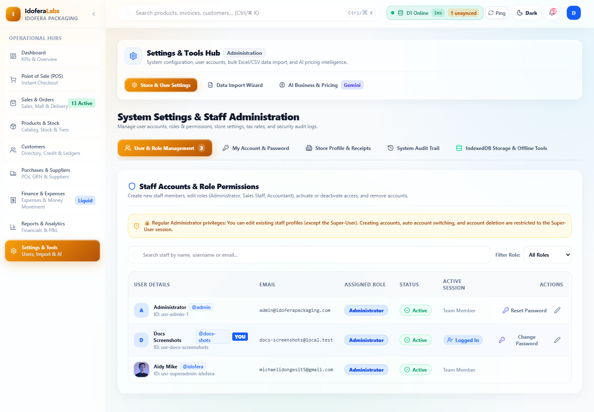
Managing users (Administrator). You can add users, set their role, reset passwords, and deactivate accounts. Remember the built-in protections:
Open Products & Stock → Mall Listings.
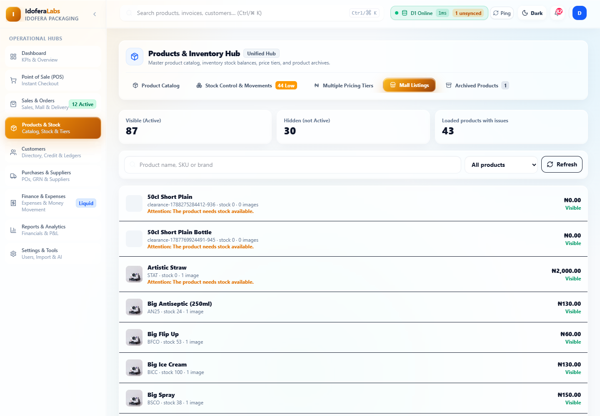
The single rule for Mall visibility is: Active product status. Every Active product appears on the storefront automatically; there is no separate publish step and no approval queue.
The Mall Listings tab shows Visible / Hidden / Issues counters and lets you merchandise each product for the storefront:
Things to know:
Ring up a walk-in sale POS → add items → optional customer/discount → choose payment method → Complete Sale.
Take a Mall order from new to collected Sales & Orders → Mall Orders → open the order → (delivery? verify address + quote fee) → Confirm Order → Start Processing → Mark Packed → Mark Ready for Pickup → Complete Pickup.
Dispatch a Mall delivery …→ Mark Packed → enter Assigned courier → Send Out for Delivery → Mark Delivered.
Confirm a bank transfer payment Open the Mall order → set Tender to Bank Transfer and enter the Reference → Verify Transfer & Create Sale.
Cancel an unpaid Mall order Open the order → set a Cancellation reason → Cancel Order (stock is released). If the issue is an unverifiable transfer, use Reject payment and cancel order instead.
Refund a paid Mall order Open the order → enter Refund reason → choose Stock disposition → add a goods-received reference if goods had already left the shop → Refund Sale.
Change what appears on the Mall Products & Stock → Mall Listings (section 4).
"Access Restricted" page Your role does not include that page. Use Return to Dashboard, or ask an Administrator if you need the access.
A button I need is not shown Most management actions are role-limited (for example, delivery quotes and cancellations are Administrator / Store Manager; refunds are Administrator / Accountant). This is intended.
"A delivery quote is required before confirmation or payment." The order is to an "other location" zone. Enter the delivery fee and Save Delivery Quote, then continue.
"I verified this address…" is shown Delivery orders need address serviceability confirmed before confirmation/payment. If you genuinely verified the address is serviceable in the zone, press it.
Confirm/Pay buttons are disabled Check the order status. Confirm only applies to pending; payment cannot be taken on an order that is still pending. Also make sure the courier field and quote requirements above are satisfied where they apply.
I type one character and the cursor jumps / I cannot type This was a defect in the modal's focus handling and has been fixed. If you see it again, note the screen and the field, refresh once, and report it — it should not recur.
A Mall listing change was rejected Another editor changed it first. Reload the listing to get the current version, then re-apply your change.
The workspace looks empty / no data loads Refresh once. If a page shows an error with a Retry action, press it. Persistent errors usually mean a connectivity or sign-in problem — re-authenticate and try again.
docs/mall-storefront-help.md.docs/mall-operations.md.docs/04-relational-backend.md.